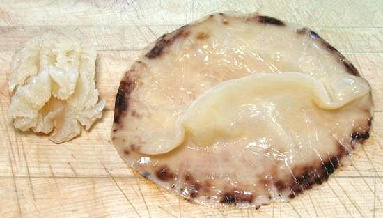
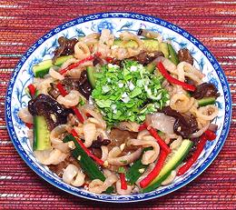
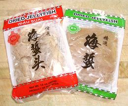

Working with Jellyfish

Jellyfish are very popular as appetizers and in appetizer salads
throughout East and Southeast Asia. Japan is currently the largest
consumer of jellyfish, but it is also popular in Korea, China and
Thailand. From the high availability here, you can presume plenty are
also consumed in Southern California. They have a firm, crunchy texture
and readily absorb the flavors of dressings and dips. Preparation takes
a little time but very little attention.
The photo to the left shows two of the forms sold here in Southern
California. The Bell (right in photo) is usually called the "body",
and the cluster of mouth tentacles (left in photo) is called the "head".
The third form sold is shredded, which is usually mostly or entirely
from the bell.
The bell in the photo was 7 inches across and about 0.06 inch thick.
A batch of 6 had an average weight of 1.4 ounces each. The "heads"
were up to 2-1/8 inches diameter and 2-1/2 inches long, with an average
weight of 2.1 ounces. From the brown color around the edge of the bell,
I believe it was from a Cannonball Jelly.
More on Jellyfish

Jellyfish are caught in nets, then immediately stripped of their
tentacles and gonads. They are separated into "heads" and "bodies",
processed with salt and sometimes alum, and compressed. If not
processed this way, the jellyfish would spoil and turn to liquid in
just a few hours. The process, which takes from 20 to 40 days, produces
"dried jellyfish", a firm, stable product. It is not actually dry, but
heavily brined, and is only 7% to 10% of the original weight.
Jellyfish bells are most often made into salads, like the one in
the photo to the left - see our recipe
Jellyfish & Cucumber
Salad "Heads" are often simply sliced and served as an
appetizer with a dish of Chingkiang Black Vinegar for dipping.

Buying:
Because of the huge Asian populations
in Southern California, we have many Asian markets here, most of which
have dried jellyfish in stock, though I haven't noticed it in the
Philippine markets. It is generally in 14 ounce unrefrigerated packages,
as shown in the photo, selling for about 2016 US $2.99 per package. The
packages may contain "heads", "bodies", or shredded jellyfish. They may
or may not be marked, but it's easy to tell which one it is. The contents
is wet with strong brine and includes some free salt. "Instant Jellyfish"
is now also available, shredded, sterilized and packed in plastic
pouches. I have not tried that version.
A few markets carry tubs of jellyfish heads and bells already
de-salted. The specimens in the photo top left were purchased
from the tubs of an Asian market in Los Angeles (Alhambra) for 2016 US
$3.59 per pound (sale price, usually $3.99).
Yield:
"Dried jellyfish" is not actually
dry, and will not swell and gain weight like other dried foods. A 14
ounce package will yield about 7 ounces after rinsing, soaking
and wringing out. If presoaked from a tub, the loss will be much less.
Preparation:
Preparation takes time but very little
labor.
- Rinse off free salt, then soak jellyfish in cold water in the fridge
overnight, changing the water twice. If you are in a hurry, you can
sufficiently de-salt jellyfish in about an hour by soaking at room
temperature in four or five changes of cool water. Never use hot water.
- Wring out the jellyfish, then cut into strips or slices as need
for your recipe.
- Place the jellyfish in a saucepan and pour in the amount of
cold water needed to just completely cover. Strain out the
jellyfish, returning the water to the saucepan.
- Bring the water to a boil, then turn off the heat and let sit
uncovered until it cools to about 190°F/90°C (about 2 minutes).
- Wring out the jellyfish again, and stir it into the hot water for
just 30 seconds. Strain it out and immediately refresh in cold
water. We are conditioning the jellyfish here, not cooking it. You will
find the pieces are now smaller, but thicker, and much firmer and more
crunchy.
- Wring out the jellyfish again and use in your recipe. Serve soon
after preparing. Don't let it sit around, because it will continue to
lose water.
Cooking:
Jellyfish is always served raw,
just lightly scalded as given above. I decided to find out what it was
like cooked. Result: it quickly loses its snappy freshness and both
color and flavor becomes darker. By 5 minutes simmering its texture is
significantly degraded and it has become a light tan color. Not
recommended.
sf_seajellyw* 140422 - www.clovegarden.com
©Andrew Grygus - agryg@clovegarden.com - Photos
on this page not otherwise credited © cg1
- Linking to and non-commercial use of this page permitted